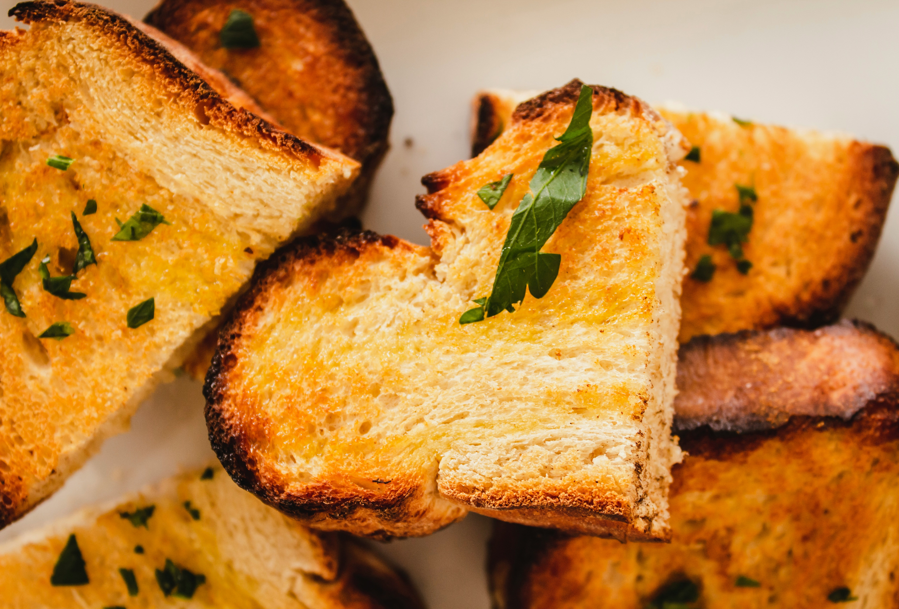

Garlic Bread

Photo by
Louis Hansel
on
Unsplash
Crispy and Buttery Garlic Bread
Garlic bread is a simple side dish made with bread, butter, garlic, and
herbs.
It pairs especially well with pasta, soup, or salad.
Ingredients
- 1 loaf French bread
- 4 tablespoons butter
- 3 cloves garlic
- 1 tablespoon chopped parsley
- 1/4 cup grated Parmesan cheese
- Pinch of salt
Steps:
- Preheat the oven to 180°C.
- Cut the bread into slices.
- Mix butter, garlic, parsley, and salt.
- Spread the garlic butter over the bread.
- Sprinkle Parmesan cheese on top.
- Place the bread on a baking tray.
- Bake until golden and crispy.
- Serve warm.